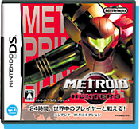
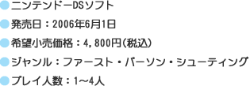
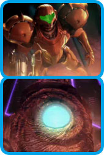
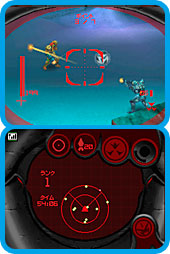
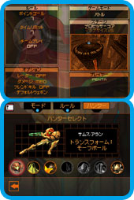
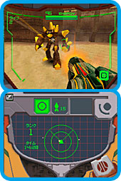

| |
|  |
 |
 |
 |

|
Wi-Fi対戦で早く世界デビューしたい心を抑えつつ、まずは1人用のアドベンチャーモードでバウンティハンターとしての修行を積んでみます。オープニングで流れるムービーは上下2画面を使っていて大迫力。画面の雰囲気はシリーズのファンなら納得できる『メトロイドプライム』の世界そのもの。シリアスなハードSFにふさわしい重厚なBGMも盛り上げてくれますね。今回は「ハンターズ」というゲームタイトルの通り、主人公サムス・アランの他に6人ものバウンティハンターたちが登場。従来のシリーズにはない新展開にワクワクします。スターシップに乗り、まずは最初の調査地であるセレスステーションへ。
FPSというゲームでは3D空間を動き回る敵をターゲットする必要があるので、それをニンテンドーDSでどのように操作するかと思っていたら、ここでもタッチペンが活躍します。ゲーム画面は上が3Dマップをサムスから見た視界、そして下がレーダーになっています。この下画面のレーダー上でタッチペンを動かすと、上画面のサムスがその方向へ視点（＝攻撃用の照準）を動かすというわけです。なるほど、これは目からウロコです。たしかにこれなら多くの敵との戦闘中でもタッチペンで照準をスムーズに動かせる。操作方法のオプションではタッチペンを使わないタイプも選べるのですが、タッチペンのほうが断然すばやく、そして照準の微調整が効く感じです。ただ、A、B、X、Yボタンでサムスを動かしたり、Rボタンでビーム発射したりする都合上（編集長、じつは左利き）、ニンテンドーDS本体を平らな床へ置かずに右手で持たないといけない。慣れないうちは左右のバランスを取るのに苦労するかも。でも、そこが硬派なFPSっぽくて、ますますいいですね。
その他のゲームシステムは『メトロイドプライム』シリーズからうまく継承されています。チャージショットやスキャンバイザーなど、おなじみのギミックが登場しますよ。そして、ストーリー上のアクセントとなるのが他のバウンティハンターとの対決です。サムスのライバルとして登場するだけあって、どのキャラもなかなか手ごわい相手ですよ。さらに現時点の装備ではまだ進めないフロアもあり、1回のプレイでは遊びきれないボリュームとなっています。 |
|
次は最大4人で対戦できるマルチプレイに挑戦してみます。FPSというゲームの興味深いところは1人用モードで扱った3Dマップデータをセンス良く（ここが大切です）アレンジすることで対戦用マップへと再構築できること。さらに同じステージでもルールを変えることで遊びの幅はグンと広がります。『メトロイドプライム ハンターズ』、その点に関しては抜かりなし！ ステージはデフォルトで8種類（最終的に26種類もあるそうです）、ルールも7種類のなかから選べます。しかも同じルールで2対2のチーム戦も試せるのが嬉しい。このおもしろさ、まだプレイしていない友達にDSダウンロードプレイで宣伝したくなること必至です。
もっとストイックに対戦の醍醐味を味わいたい人はWi-Fi対戦で“世界”に挑戦してみては。ルールは敵を倒した総数を競う“バトル”限定、戦績によってハンターライセンスのランクも上昇していきます。なかなか燃えてくるシステムですよね。国内対戦はまだスタートしていなかったので、無謀にも海外のプレイヤーたちに挑戦してみました。参加者をチェックすると名前のうしろに“GER”とか“FRA”とか国の略称やチーム名らしきモノをつけている人もいて、こちらのテンションも妙に上がります。しかし、いったん戦いがスタートすれば経験の差は歴然。惨敗です。サブウェポンのインペリアリストでヘッドショットキルされまくりです。相手に倒されたときは、誰に＆どの武器で＆どんな方法で倒されたのかが画面に表示されます。そしてヘッドショットキルというのはFPSの世界ではおなじみで、小さい頭部に精確にショットを撃ちこむ上級テクニックです……これじゃ、ゲームのCMと同じだよ。でも、ここで落ち込んでいる場合じゃない。すかさず相手をライバル登録してみました。そう、このゲームはフレンドとは別にライバルもどんどん増やせるんです。
相手の了解を得られればライバル登録は完了です。登録できる人数はフレンドとライバル合わせて60人まで。ライバルはフレンドと同じように対戦に誘うこともできる。じゃあ、このゲームにおける両者の違いは何？ と気になりますよね。じつはフレンド同士は内蔵マイクを使ったボイスチャットができるんです。携帯型ゲーム機で音声通話ですよ！ 初めて試したときはちょっと感動してしまいました。ニンテンドーWi-Fiコネクションが持つ可能性の高さには本当に驚かされます。ニンテンドーDSとFPS、こんなにも相性のいい組み合わせは他にはないでしょう。『メトロイドプライム』シリーズのファンはもちろん、FPSの対戦が好きな人にも絶対にオススメです。 |
|
|